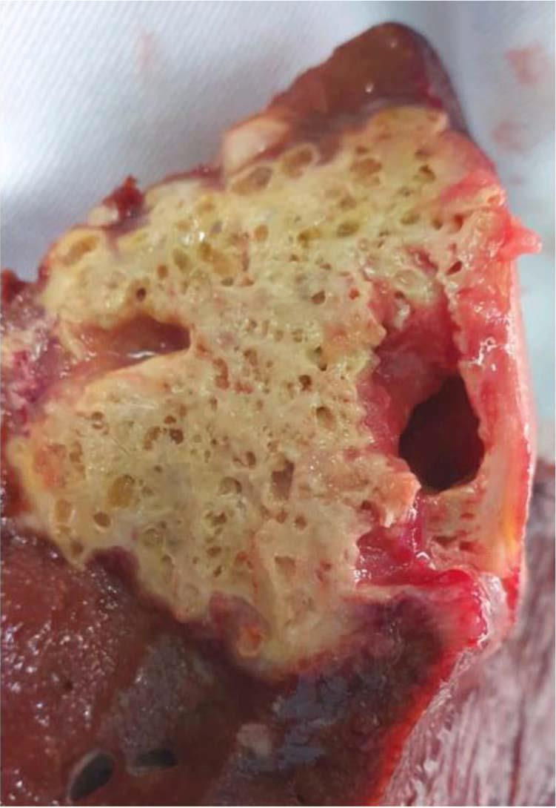
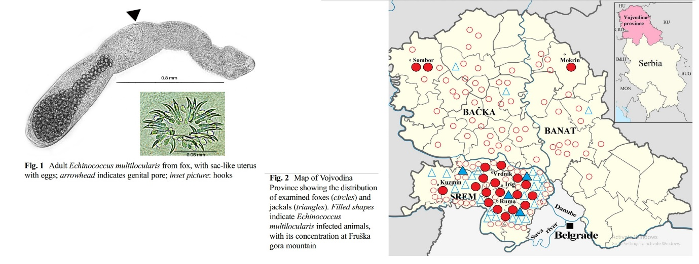
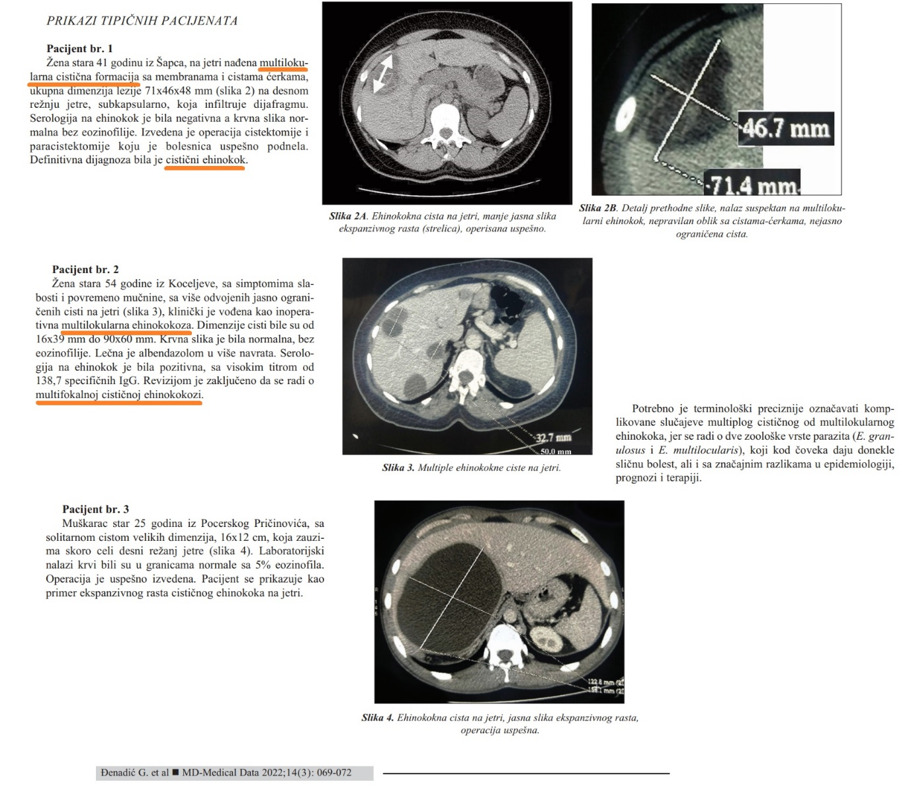

Multilokularna ili alveolarna ehinokokoza je novoregistrovana zoonoza u Srbiji i kod ljudi i kod životinja. Prvi nalaz bio je kod dabra iz Zasavice 2012. god. Glavni definitivni domaćin je lisica. Identifikovano je žarište na teritoriji Srema, koji je već dokazano endemsko područje za multilokularni ehinokok kod lisica i šakala. Prvi humani slučaj multilokularne ehinokokoze dokazan je decembra 2022. u severnoj Mačvi, u opštini Sremska Mitrovica. Godinu dana kasnije otkriven je drugi slučaj, a oba su operisana i tačna preoperativna dijagnoza nije mogla biti postavljena. Na operativnom materijalu postavljena je patološko-histološka dijagnoza i oba slučaja su publikovana. Treći slučaj takođe iz Srema dokazan je serološki a pregledom biopsije lezije na jetri dokazano je da se radi o ehinokokozi.
Moguće je da u Srbiji postoji drugo žarište multilokularne ehinokokoze u Sandžaku, gde je identifikovan jedan humani slučaj, operisan i na patološkom materijalu istovremeno dokazan ehinokok i karcinom jetre. Pre nekoliko godina opisan je i prvi slučaj u Hrvatskoj, gde je pacijent kao faktor rizika imao branje gljiva u šumi u Vukovarsko-sremskoj županiji.
Humana multilokularna ehinokokoza je potencijalno letalno oboljenje. Zbog teške preoperativne dijagnostike, zbog zoonotskog karaktera, zbog toga što do 2022. nije bila poznata na teritoriji Srbije, zbog drugačije epidemiologije, prirodne evolucije i terapije u odnosu na mnogo poznatiju cističnu ehinokokozu, potrebna je edukacija naših lekara, u prvom redu radiologa, abdominalnih hirurga i patologa o ovoj bolesti u cilju uspešnog kliničkog tretmana i diferencijalne dijagnostike multilokularne od cistične ehinokokoze.
U tom cilju Društvo parazitologa Srbije osnovalo je na sastanku održanom 6. decembra 2024. godine u Institutu „Siniša Stanković“ (IBISS) Grupu za multilokularnu ehinokokozu (GzME). Ciljevi Grupe su naučni i stručni rad kao i edukacija lekara, veterinara, biologa, lovaca, ljubitelja prirode i drugih zainteresovanih.
Članovi Grupe:
Publikovani radovi o multilokularnoj ehinokokozi kod životinja u Srbiji:
Radovi o multilokularnoj ehinokokozi kod ljudi i diferencijalnoj dijagnostici prema cističnoj ehinokokozi u Srbiji:
Izveštaj u kome se prvi put citira nalaz multilokularnog ehinokoka u Srbiji:
Jetra čoveka sa alveolarnim – multilokularnim ehinokokom, operativni materijal (Milošević et al. 2024)
E. multilocularis kod lisica i šakala u Vojvodini
